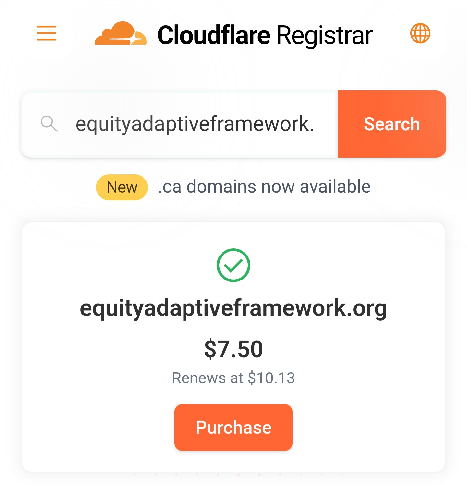

Donations & Support
Donations support the direct development, stability, and public accessibility of the Equity Adaptive Framework (EAF). Contributions are used solely for practical infrastructure and advocacy-related expenses that enable the framework to remain independent, transparent, and publicly accountable.
Funds may be used for purposes such as securing and maintaining a permanent domain, hosting and documentation tools, and subsidising clearly scoped public-interest advocacy or educational initiatives. Donations are voluntary and do not confer influence, control, priority access, or exemptions over EAF’s principles, interpretation, or direction.
EAF is not a registered charity and does not represent a commercial service. Financial support exists only to remove access barriers, ensure continuity, and support ethical dissemination in line with the framework’s core principles.
Current & Near-Term Goals
-
Foundational Infrastructure
- Secure a permanent, independently owned domain (e.g., transitioning to a clean *.org extension instead of *dpdns.org for improved stability, professionalism, and long-term citation reliability)
- Cover essential hosting and documentation costs
- Ensure long-term accessibility and citation stability
Annual Renewal: $10.13 USD (~$16.74 NZD as of 12 Feb 2026). For a *.org domain

-
Framework Development
- Refine and publish core EAF documentation
- Improve clarity, structure, and explainability
- Support research, review, and iterative improvement
-
Advocacy & Public Education
- Subsidise targeted, non-partisan advocacy campaigns
- Produce educational materials and case-based explainers
- Increase visibility among institutions, regulators, and the public
-
Transparency & Continuity
- Maintain clear spending categories
- Ensure alignment with EAF’s ethical constraints
- Prepare for future formalisation if appropriate
How To Donate?
Donations are currently received via Ko-Fi
We recommend Ko-Fi as it charges 0% commission, ensuring the full value of your contribution supports EAF.
Transparency Statement
This page is used to support EAF-related infrastructure and advocacy. It does not imply charitable status or formal organisational structure. Any future changes to how donations are received or managed will be disclosed transparently and handled in accordance with EAF’s ethical principles.